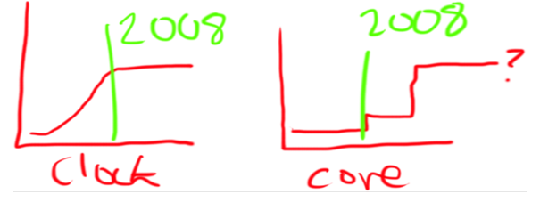
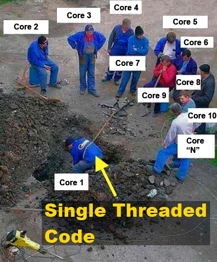

Your browser doesn't support the features required by impress.js, so you are presented with a simplified version of this presentation.
For the best experience please use the latest Chrome or Safari browser.
Nefarious web robots
async and await!
What? More Parallel Programming patterns?
Why?
Moore's law (1965) Wikipedia :
-
A rule of thumb in the history of computing hardware whereby the number of transistors that can be placed inexpensively on an integrated circuit doubles approximately every two years.
Multi-core / Many-core machines...
CPU clock speed increases have eased... The free ride may almost be over. Performance gains are now via multiple cores per processor. Servers are fitted with many multi-core processors.
Or if you like ghetto graphs

Or think of the problem like this...

Amdahl's Says what? (1967)
The speedup of a program using multiple processors in parallel computing is limited by the time needed for the sequential fraction of the program.
- Wikipedia
At all times have:
One thread ready to work per core
*
* a bit simplistic... but you get the idea.
So...
- Multi-threading is difficult!
- There are many levels of abstraction
- Threads and shared data represent a tough problem
- Synchronisation of threads and call backs are messy
- Existing managed async code patterns "too difficult for developers" says Microsoft*
- The asynchronous development landscape at Microsoft is in a state of flux...
*Anders on a recent MVP survey
- The Asynchronous Programming Model? (APM or the Begin/End pattern)
- The Event-based asynchronous pattern? (EAP i.e.
MethodNameAsync)
...
Stephen Toub says:
The new 'Pattern' deprecates both of its predecessors, while at the same time providing the ability to easily
build migration routines from the APM and EAP to TAP.
The Task-based Asynchronous Pattern is built on top of the TPL. Two new keywords await and async along with some compiler changes brings new code composition techniques to the language.
- Focuses on code composition rather than creating threads
- Helps you write clean code for UI interaction
- Allows the compiler do some of the heavy lifting
- Smells just like co-routines and futures
- Part of the mainline strategy for Parallel Programming on the .NET Framework
- More async coming... Windows 8 (and RT) introduces further async APIs to the BCL
- Can be used anywhere, phones, tablets, smart clients, web and application servers
- Reactive extensions? (Rx)
- CCR?
- TPL Dataflow?
- Map Reduce
- Windows RT?
- I/O Completion Ports?
- Node.js, SignalR and web sockets?
...
Enough Already!
How does Task based programming make my life easier?
<it's code time/>
- Abstraction is the natural enemy of performance
- A scientific approach will save you time and money in the long run
- May I strongly suggest that you add runtime logging and performance metrics to all code up front :)
- Measure, compare, test and keep it simple!
Questions?